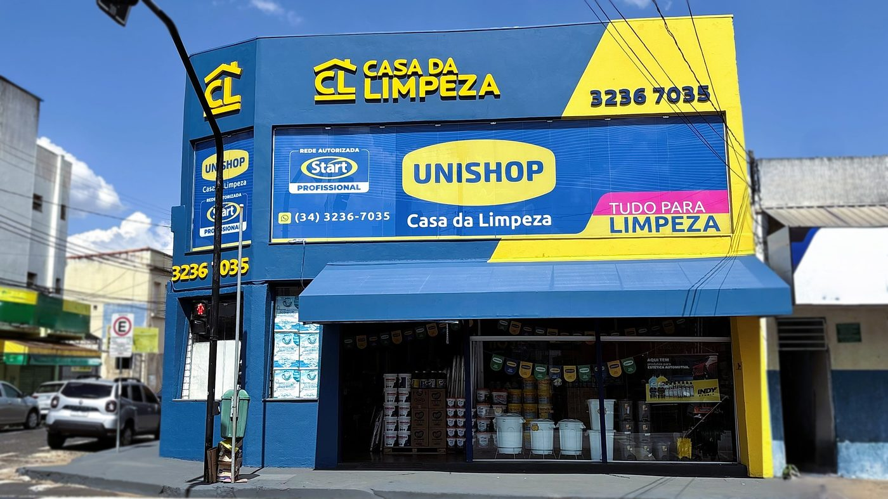

Há mais de 20 anos oferecendo soluções para residências, condomínios, restaurantes, clínicas e academias. Encontramos o produto certo para cada necessidade.
Quem somos
A personalidade da Casa da Limpeza é marcada pelo compromisso, pela seriedade, pela proximidade e pelo respeito aos seus clientes. Buscamos, em cada atendimento, compreender as necessidades de quem procura a loja.
Mais do que vender produtos, a Casa da Limpeza procura construir relações de confiança e oferecer uma experiência de atendimento acolhedora, responsável e diferenciada.
Nosso esforço: esclarecer dúvidas, buscar alternativas e encontrar a melhor solução para cada necessidade, sempre orientando o cliente a resolver o problema apresentado.

Para cada tipo de limpeza, um produto diferente. Nossa equipe está pronta para te ajudar.
Produtos específicos para limpeza pesada após reformas e construções, um diferencial que você só encontra aqui.
Há mais de 20 anos no mercado, tratamos todos os clientes com a mesma atenção, respeito e dedicação.
Trajetória
A Casa da Limpeza nasce em Uberlândia com uma proposta clara: oferecer mais do que produtos, trazer orientação e soluções reais para cada cliente. Desde o primeiro dia, o foco foi compreender a necessidade de quem chega.
A equipe era pequena, mas o compromisso era grande. Com o aumento da demanda, a estrutura foi se expandindo. A empresa passou a oferecer cursos gratuitos para parceiros, um diferencial que foi marca da empresa desde cedo.
Com o crescimento da clientela e da operação, a Casa da Limpeza mudou para um espaço maior. Uma conquista que representou um importante marco: mais capacidade de atendimento, mais marcas, mais soluções.
Percebendo uma lacuna no mercado local, passamos a trabalhar com produtos especializados em pós-obra e com a linha institucional Qualifood.
Trabalhamos com mais de 17 marcas, atendemos condomínios, restaurantes, clínicas, academias e residências em toda Uberlândia. A missão continua a mesma: orientar o cliente de forma precisa para resolver o problema apresentado.
Diversos produtos e soluções para áreas comuns e manutenção regular.
Linha institucional Qualifood para cozinhas profissionais.
Produtos de higienização com eficácia comprovada.
Limpeza de vestiários e áreas de uso intenso.
Do uso diário ao pós-obra, temos o produto certo para cada tipo de limpeza.
Todos os produtos para o tratamento completo da sua piscina.
Av. Afonso Pena, 1138 - Bairro Aparecida, Uberlândia - MG
Seg - Sex 8h - 18h · Sáb 8h - 12h · (34) 3236-7035
Falar no WhatsApp